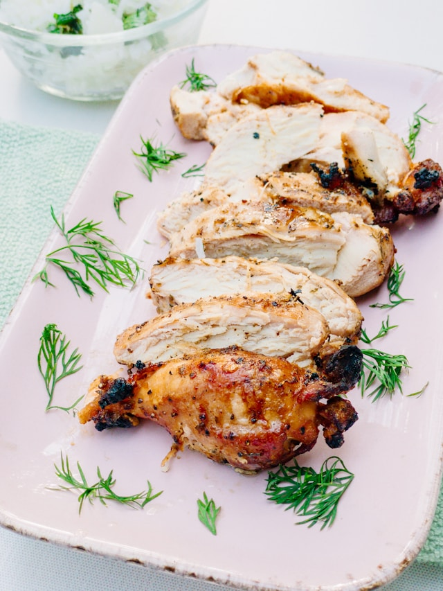

Chicken Breast

Description
This recipe will show you how to prepare perfectly juicy chicken breasts with a crisp, golden brown exterior. No
more dry, hard, and chewy chicken!
Let's begin.
Ingredients
- Chicken Breasts (Divided) - x2
- Salt - To Taste
- Pepper - To Taste
- Garlic Powder - To Taste
- Vegetable Oil - 5-6 Tbsp
Steps
- Add 2-3 tbsp oil in a stainless steel pan, and put it on medium heat.
- Take 1 chicken breast and dry it out completely with a paper towel.
- Sprinkle few pinches of salt, black pepper, and garlic
powder on both sides of the chicken breast.
- Once your pan is smoking slightly, lay down the chicken breast in it, with the smooth side facing down.
- Let it cook for 4-5 mins, until that side is crispy and golden brown.
- Then, give it a turn. Cook the other side for an additional 4-5 mins. Take it out once ready.
- Rest your cooked chicken breast on a wire-rack for 10 mins.
- Cut against the grain into pieces, and lay it out on your plate.
- Serve with a side of mashed potatoes, and roasted greens.